John Bell’s HVM for a single spin-1/2 particle
In his original 1964 paper On the Einstein Podolsky Rosen Paradox John S. Bell gives an illustration of a hidden variable model that reproduces all of the spin measurement statistics of quantum theory for a single particle of spin-1/2. It was a common held belief at the time that such models cannot exist, and so his illustration served as motivation for his subsequent analysis. He quickly presents how the model is defined and skips a lot of the calculations, and so for my understanding, I’ve filled those in.
He starts out with a spin-1/2 particle in a pure state with polarization given by some
vector 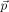. The hidden variable that he has chosen for this model is given by a unit vector 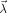
that is distributed uniformly over the hemisphere  :
:
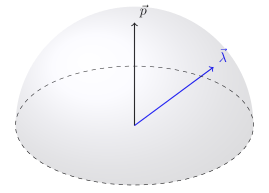
Let 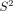 be the unit sphere which we will use as the set of spin measurement directions. Let 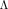 be the set of unit vectors satisfying the hemisphere condition. The model is a function 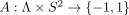 defined as
| (1) |
where 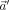 is a unit vector that depends on the polarization and the measurement direction 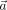. This angle is chosen in such a way that the statistics of the measurements are reproduced. This is done by calculating the expectation value of 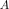 over the hidden variable given by the uniform density 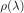. John does not state any details here but we can assume that he is using the Lebesgue measure 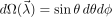 on properly normalized over the hemisphere of interest. Since 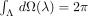, the distribution is
| (2) |
John then states that the expected value of given the distribution 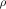 is equal to 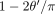 where 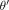 is the angle between the soon to be determined vector and . We now look at the details of this calculation. By definition, the expectation value is
To evaluate the integrals we must compute the area of the intersection of two hemispheres. Let 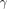 be the angle between two vectors and 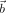, which define the hemispheres 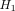 and 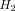 respectively. We orient the coordinate system so that both vectors lie on the 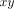-plane with parallel to the 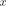-axis and 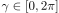. Symmetry dictates that the area will be the same for and 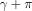, so we need only consider 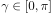. Under this choice, has coordinates 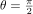 and 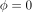 and has coordinates and 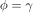. Then the area of the intersection of and is
| (5) |
Going back to the calculation of the expectation value, we recall that is the hemisphere defined by , while defines the other hemisphere, therefore
| (6) |
where is the angle between and . Similarly, the condition 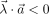 defines a hemisphere opposite to the one defined by 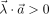. Thus, since is normalized we obtain
| (7) |
Therefore the expectation value is
| (8) |
which is what John stated in Eqn. (5) of his paper. The question now is, how do we define so that this model reproduces the spin statistics? This is of course trivial since the expectation value of a spin measurement in direction for a polarization is
| (9) |
where 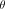 is the angle between and . So given the measurement direction and the state, the angle between and must satisfy
| (10) |
which leads us to,
| (11) |
So by construction, the expectation value of the model , for a given measurement direction , with respect to the uniform distribution over the hidden variables , determined by the polarization (a bit of a mouthful), matches the expectation value given by quantum theory. In other words, the model reproduces all of the spin statistics in a deterministic manner, i.e., if we knew the value of for some measurement instance, then we could predict with certainty the outcome 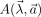. The statistical features of quantum theory then only arise because we don’t know the value of this variable for individual instances. John then goes on to show that when considering a bi-partite system, under certain assumptions (which are reasonable but can be questioned), any hidden variable model is constraind by some inequality determined by the correlations of the value assignments, yet the statistical outcomes determined by quantum theory violate this inequality. Such violations have been verified experimentally, yet one must be careful not to draw over-reaching conclusions about non-locality and realism, as a lot comes down to the accepted assumptions. I will post more on this later.